Light vs Dark
RTSGrow a settlement into an army. Gather resources, build a base and command units across a contested map.
The Polyworld engine
I needed a game engine that did lockstep simulation and ran well in the browser and natively, ran really fast headless and had support for AI scripting and neural networks, and I love Nim so I built this.
Start with a game you want to play. Give your AI agent the idea, let it set up Polyworld, then build and iterate together.
Try a little RTS with gnome workers, a growing village and a rival army. Copy this prompt into your AI coding agent to get started.
Read the setup guide ↗Clone https://github.com/softmax-universe/polyworld and set it up on my machine. Read its README and repository instructions, install the required Nim version and dependencies, and fetch the art assets with Git LFS.
Build a small 3D RTS in Nim with gnomes. Start with an isometric camera, drag-to-select units and right-click movement. Let gnome workers gather wood and gold, build a village and train an army to take on a simple AI opponent. Win by destroying the enemy base.
Reuse Polyworld's rendering, pathfinding, deterministic simulation and UI. Use the available gnome characters and matching art assets. Keep the first version small and playable.
Run it locally, fix build or runtime errors, and launch the game for me to play, wait for further refinements.Made with Polyworld
Grow a settlement into an army. Gather resources, build a base and command units across a contested map.
Enter the dungeon together. Fight monsters, use abilities and collect treasure, with every hero trying to make it out richer.
One hook can change the fight. Aim across the river, pull an opponent out of position and turn a good shot into a team advantage.
Make each card count. Combine class abilities, targeting and timing in a tactical battle presented as a living 3D board.
Paint the island your color. Lead a crew of cogs, capture heart towers and coordinate attacks to turn territory into victory.
Seven powers. One map. Negotiate alliances, command armies and fleets, and seize supply centers with simultaneous orders.
Build your network. Hold your ground. Four teams of eight Cogs gather resources, equip specialist roles and capture junctions to claim territory.
polyworld_art
A shared collection of characters, terrain, buildings, props, textures and UI in a consistent low-poly style. Reuse and combine the assets across games so you can focus on the ideas, rules and feel.
Original Polyworld artwork is released under CC0 1.0: free to use, modify and share, including in commercial games.
Explore polyworld_art ↗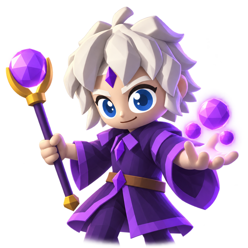
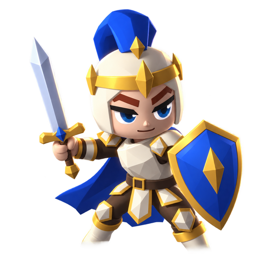
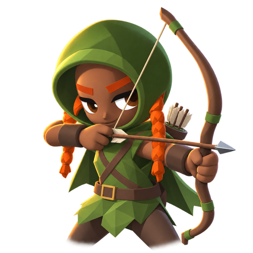
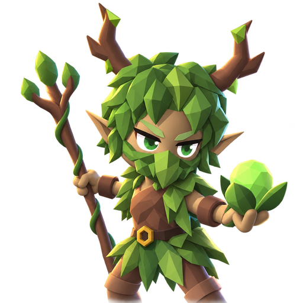
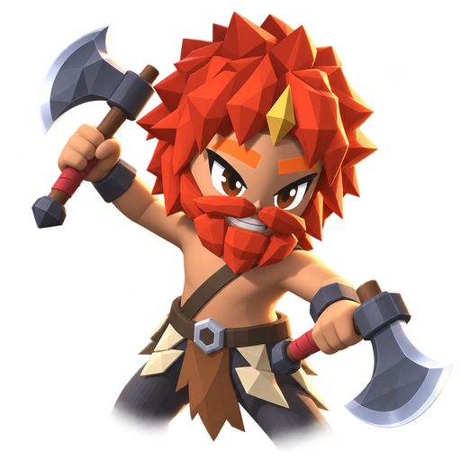
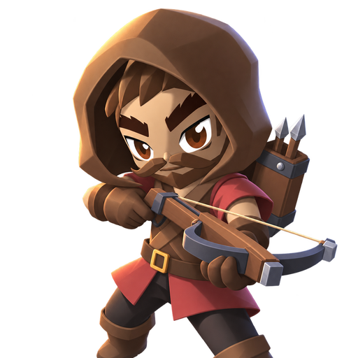
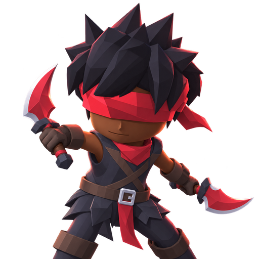
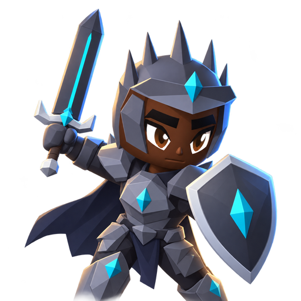
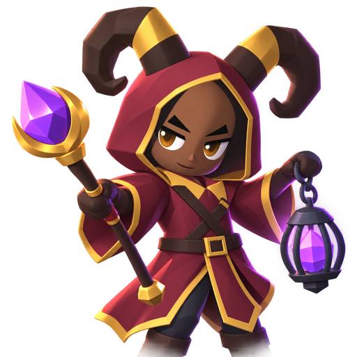
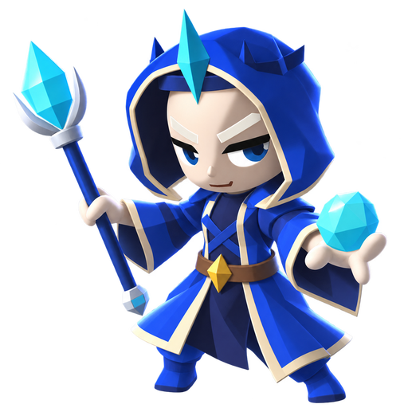
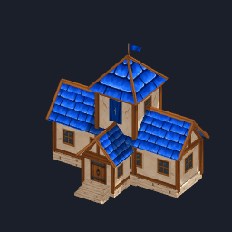
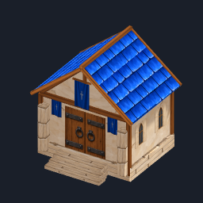
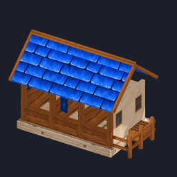
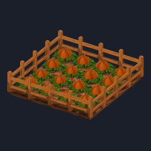
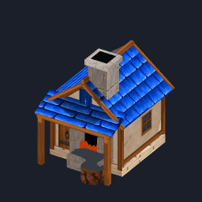
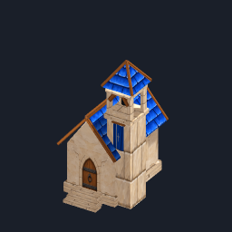
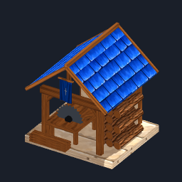
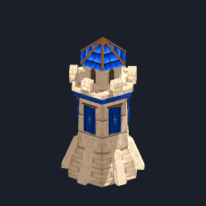
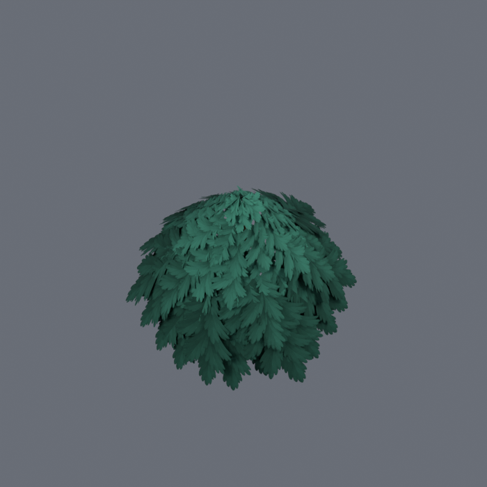
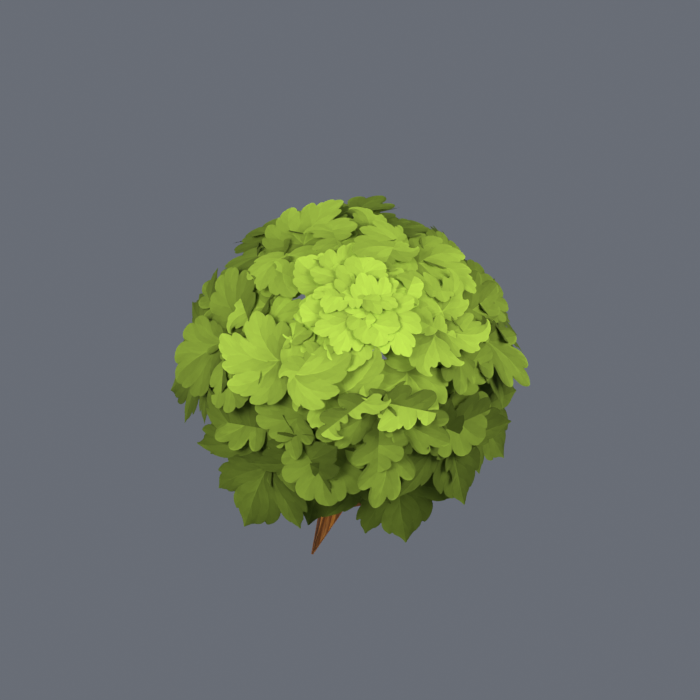
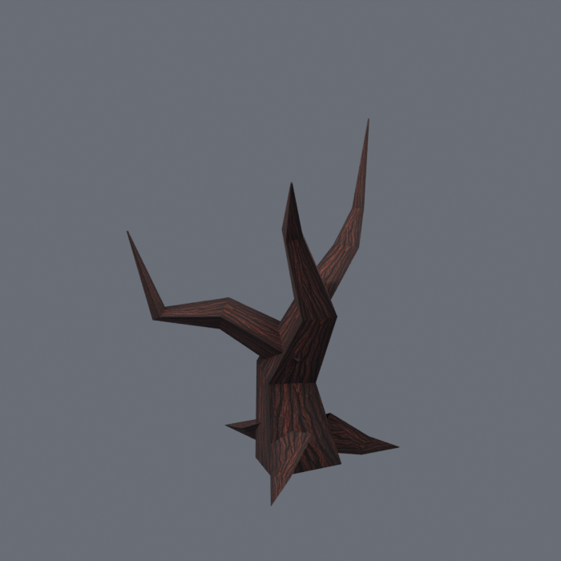
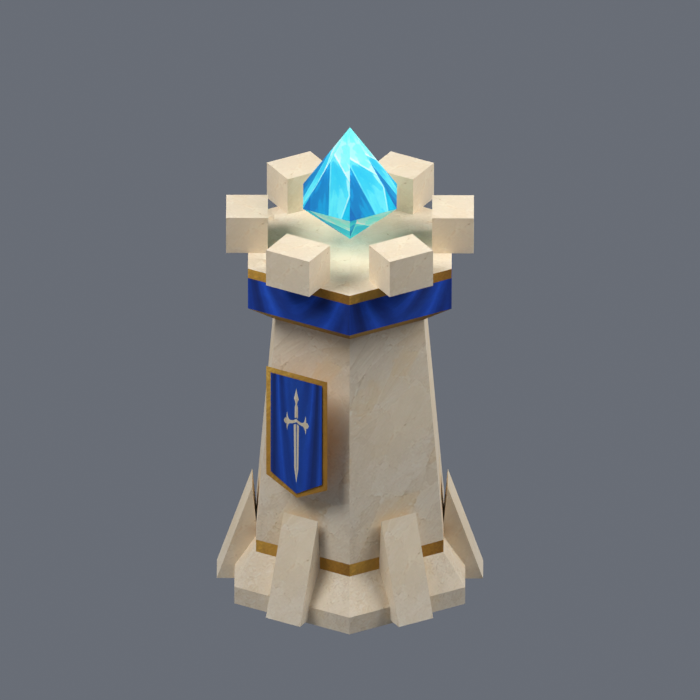
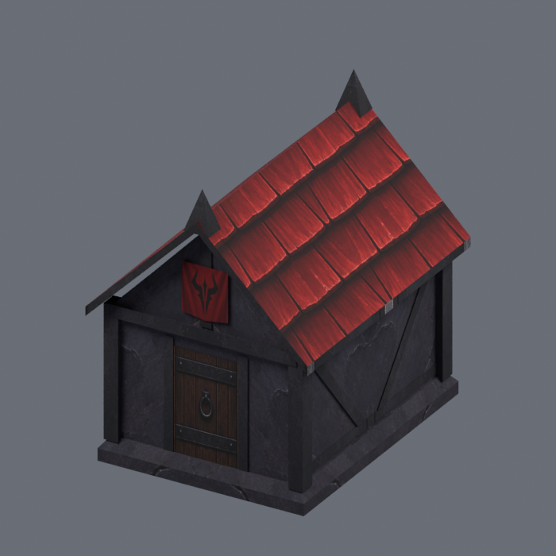
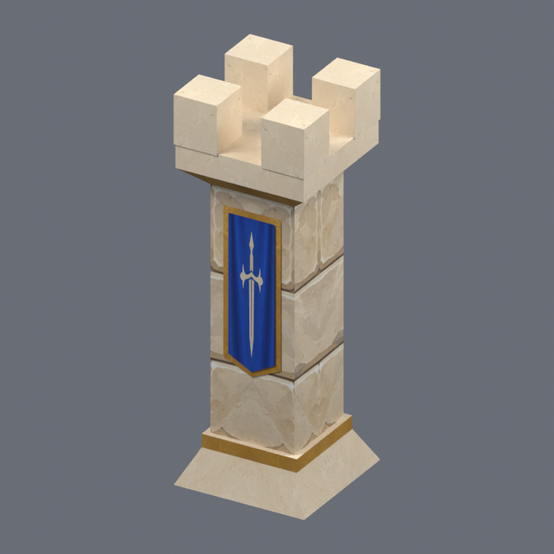
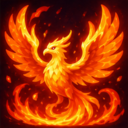
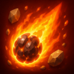
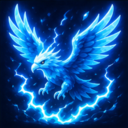
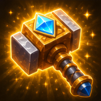
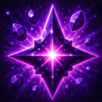
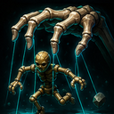
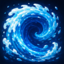
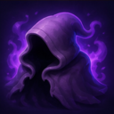
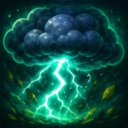
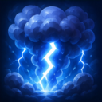
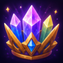
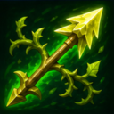
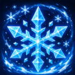
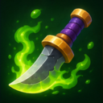
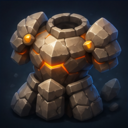
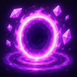
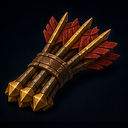
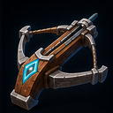
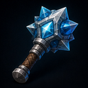
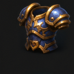
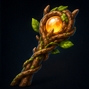
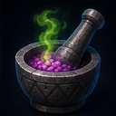
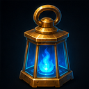
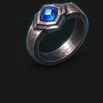
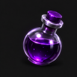
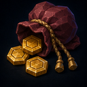
Creation tools
Use Chargen, Treegen and Rockgen to build assets, and the grid terrain system to shape your world. Give your AI agent the art generation skill files for characters, buildings, icons, trees, rocks and terrain. We recommend GPT-6 Astra for modeling assets.
Mix character parts, outfits and colors, then preview the result in motion with a library of animation clips.
Explore Chargen ↗Shape trunks, branches and leaves. Switch species, explore seeds and grow trees, shrubs and flowering plants from reusable recipes.
Explore Treegen ↗Build rocks from shape, surface and color controls. Change the seed, compare variations and export the result as a GLB.
Explore Rockgen ↗Build layered terrain from noise. Inspect walkable edges, find routes across the grid and regenerate the landscape with a new seed.
Explore grid terrain ↗Multiplayer, built in
Polyworld includes deterministic lockstep multiplayer networking, game lobbies, battle setup and a multiplayer server, with optimized WebSocket support for both browser and native clients.
Every client runs the same deterministic simulation from the same ordered inputs. Browser and native players advance together, keeping multiplayer matches in sync without streaming the whole world.
Save the match setup, player commands and state hashes, then rebuild the action through deterministic playback. Compact replays make it easy to share matches and inspect what your bots did.
Check simulation state with hashes that match across native and WebAssembly builds. Compare checkpoints to detect desyncs and identify where a match or replay starts to diverge.
One language, through the stack
The engine and its game systems are written in Nim, with a whole family of Nim libraries underneath. Follow a feature from game logic to the GUI, font renderer or image decoder in the same language.
Where other engine stacks use SDL, GLFW or libpng, Polyworld uses Windy, Silky and Pixie. Polyworld calls OS, graphics and browser APIs directly through C, C++, Objective-C, JavaScript, and Emscripten bindings.
Explore the engine's dependencies ↗One foundation. Many worlds.
Polyworld brings together 3D rendering, procedural maps, pathfinding, lock-step networking, shared game UI, and simulation for procedural-deterministic and neural-network AI bots. Build the rules of your world on a foundation already used across arenas, strategy games and dungeon adventures.
For AI research, the same worlds become environments to explore: give agents observations and actions, run matches without graphics, then replay their decisions in the game.
A window, a camera, keyboard input, drawing and a score in 40 lines. Move with the arrow keys and collect the gold marker.
Save the example in your Polyworld checkout, then run:
nim r collect.nimimport chroma, gltf, opengl, vmath, windy, polyworld/shapes
let window = newWindow("Arrow keys: collect gold", ivec2(960, 640))
window.makeContextCurrent()
loadExtensions()
var
render = newRenderer(window)
batch = initShapeRenderer()
player = vec3(0)
goal = vec3(2, 0, 2)
score = 0'i32
camera = perspective(45'f, 1.5'f, 0.1'f, 50'f) *
lookAt(vec3(8, 10, 8), vec3(0), vec3(0, 1, 0))
while not window.closeRequested:
pollEvents()
if window.buttonPressed[KeyLeft]: player.x -= 1
if window.buttonPressed[KeyRight]: player.x += 1
if window.buttonPressed[KeyUp]: player.z -= 1
if window.buttonPressed[KeyDown]: player.z += 1
player = clamp(player, vec3(-4, 0, -4), vec3(4, 0, 4))
if player == goal:
inc score
window.title = "Collected: " & $score
goal = ivec3((score * 3) mod 9 - 4, 0, (score * 5) mod 9 - 4).vec3
render.beginFrame(window, window.size)
render.clearScreen(color(0.04, 0.05, 0.08, 1))
batch.clear()
batch.addSquare(vec3(0), 10, rgbx(40, 55, 70, 255))
batch.addHexagon(goal, 0.35, rgbx(255, 190, 75, 255))
batch.addCircle(player, 0.35, rgbx(90, 200, 255, 255))
batch.draw(camera)
render.endFrame()
window.swapBuffers()
batch.closeShapeRenderer()
window.close()Follow a slow frame down to the work behind it. Fluffy brings together a zoomable trace timeline, a sortable timing table and a memory treemap, all written in Nim with Silky.
Polyworld connects capture to inspection: on desktop, press F2 to start recording, then press it again to open the completed trace in Fluffy.
Under the surface
01 / Create
Start with a wild idea and get to something playable fast. Vibe code the rules, build a world and keep trying things. Making games should be fun.
02 / Research
Write procedural, scripted bots or train neural networks. Give them a world to act in, run matches headlessly and find out what actually works.
03 / Replay
Understand what happened, one decision at a time. Pause, scrub and follow the action. Lock-step replays rebuild the match from its inputs, keeping recordings tiny.
04 / Connect
Invite friends, team up with your bots or take them on yourself. Built-in lobbies and lock-step networking bring everyone into the same match.